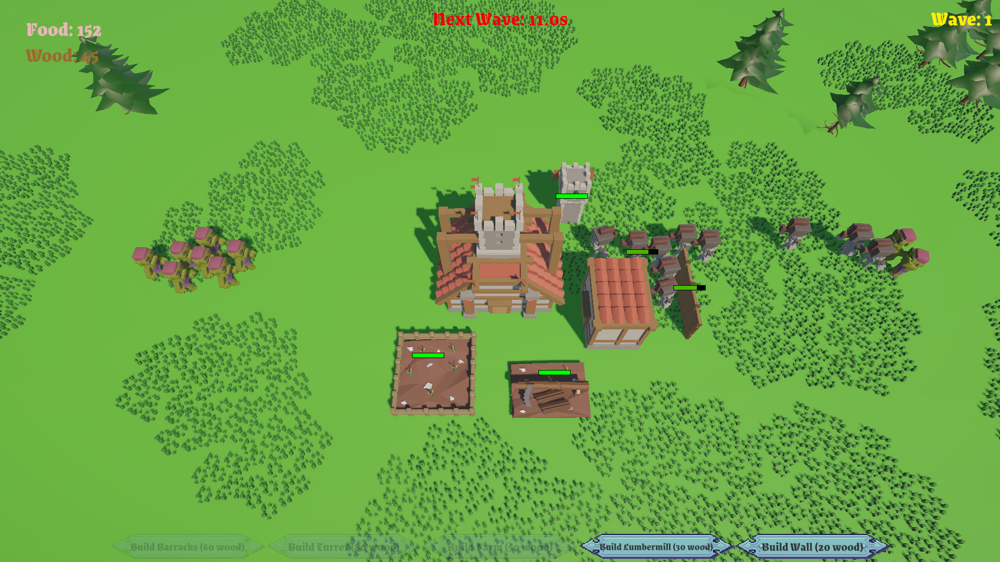
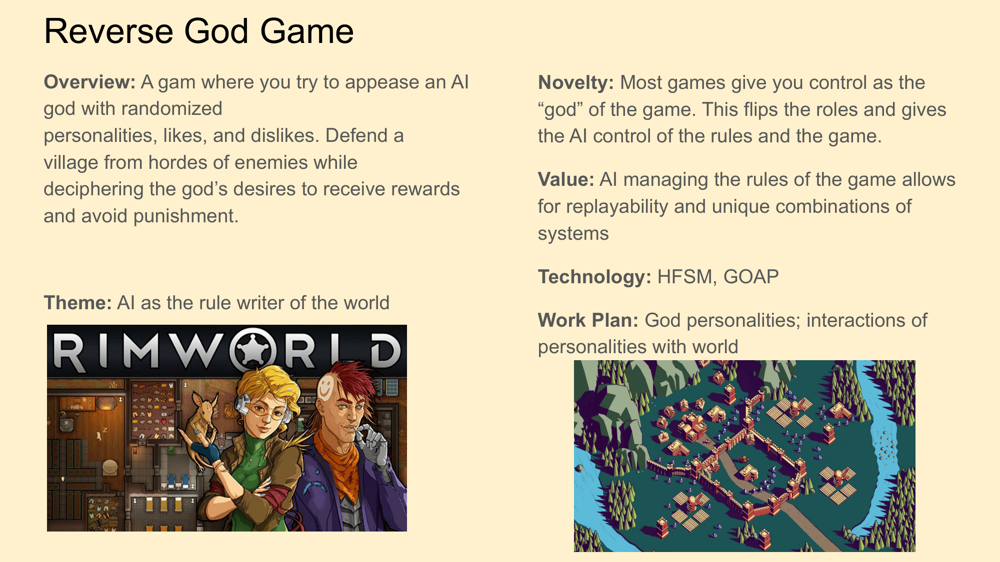

God's Judgment

God's Judgement is a strategy simulation where you manage a small village while a god observes and judges your actions. Gather resources, train troops, and defend your settlement as the god dynamically rewards or punishes the village based on the state of the world. The deity uses a utility-based game-AI system to decide when to spawn enemies, bless your army, cause famine, or unleash destructive events like earthquakes. Each playthrough features a different divine personality, making the god more aggressive, greedy, or chaotic. To survive, players must adapt their strategy and learn how to endure the unpredictable trials sent from above.
Responsibilities: Solo Developer
Tech: Unity, C#
Process
Initial Idea

Interaction Testing
Initial Prototype
Summary of Contributions
Resource and Building System
The foundation of the game is a singleton ResourceManager that tracks food, wood, troop count and maximum troop capacity as live float values. Every system in the game reads from and writes to this manager. Buildings consume wood on placement, farms generate food over time, and lumbermills generate wood passively.
Building placement is handled by BuildingPlacer, which spawns a preview of the selected building that follows the mouse cursor in real time. The preview uses Physics.OverlapBox to check for collisions with existing buildings. Placement is then snapped to a 1-unit grid via Mathf.Round.
Each building type has its own script handling its specific behavior. Barracks spawns troops on a timer, Lumbermill adds wood every second, Turret detects the nearest enemy within range and fires arrows toward it, and BuildingHealth handles click-to-heal interactions using the New Input System with an EventSystem UI guard to prevent clicks on UI buttons from accidentally healing buildings behind them.
Troop AI | Utility Brain
Player troops use a utility-based AI system rather than a traditional finite state machine. Every 0.5 seconds, UtilityBrain calls CalculateUtility on every action available to the troop and executes whichever one returns the highest float score between 0.0 and 1.0.
Enemy AI
Enemies use a simpler deterministic priority-based targeting system via EnemyBrain. Every 0.5 seconds enemies evaluate targets in strict descending priority. This was a deliberate design decision as enemies are intentionally predictable so that walls and troop positioning feel meaningful as defensive tools.
God AI | Personality System
The god system is the most complex and central system in the game. On each new game, GodManager randomizes a GodPersonality across three independent axes:
Each axis has its own float satisfaction value initialized at 0.5, calculated every tick from live game data held in GodContext.
Morality satisfaction uses a rolling 10-second death window. Every 10 seconds the system counts all troop and enemy deaths in that window and compares against a threshold of 5. A Peaceful god gains satisfaction when few deaths occur and loses it during heavy combat. A Violent god is the exact inverse.
Style satisfaction is calculated geometrically. GodManager computes the average pairwise distance between every building in the village. A Wild god scores Clamp01(spread / 40f). It wants buildings scattered across the map. A Modern god scores the inverse. It wants a tight clustered village.
Consumption satisfaction maps the player's total food plus wood against a ceiling of 500 units. An Abundant god wants the player to stockpile resources while a Glutton god reversely wants resources to be low.
God Action Utility System
Every 10 seconds GodManager evaluates all god actions using the same utility scoring pattern as the troop AI. Each GodAction subclass implements CalculateUtility returning a float score and Execute containing the actual effect. Only the single highest scoring action fires per tick.
Punishment actions fire when satisfaction is low and include SpawnEnemiesAction, EarthquakeAction, FamineAction, and DesertTroopsAction.
Reward actions fire when satisfaction is high and include BuffTroopsAction, HealTroopsAction, and ArmorTroopsAction.
Hint and Feedback System
Since the god's personality is never directly shown, the game communicates through an indirect hint system. Every tick GodManager compares current satisfaction values against the previous tick's values. If any satisfaction changes by more than 0.10f in either direction a hint popup appears on screen. Popups fade in and out via a CanvasGroup and stack vertically if multiple hints fire in quick succession.
Wave and Spawn System
WaveSpawner manages a two-phase timer. A short countdown before each wave and a longer rest period between waves. Enemy count scales as baseEnemiesPerWave + (currentWave - 1) * enemiesAddedPerWave, modified at game start by the selected difficulty which adjusts base count, wave frequency and countdown duration. The god can add additional enemies at any time via WaveSpawner.SpawnBonus, bypassing the wave timer entirely as a punishment.
Persistence and Scene Management
Cross-scene data is carried by DontDestroyOnLoad singletons including DifficultyData, MusicManager, AudioManager, and GameOverData.
What I Learned
Learning Utility AI and Procedural Systems
Going into this project, I had never implemented a utility-based AI system or a procedural personality generator in a game.
Developing this system required designing an AI architecture that continuously evaluates the current world state, derives contextual information, and calculates utility scores for a set of possible actions.
Through this process I gained experience designing modular AI systems capable of evaluating multiple competing actions and adapting to dynamic world conditions.
Utility AI over HFSM
Initially, I visiualized using a hierarchical finite state machine (HFSM) for the god's behavior, quickly into the designing process I realized it would have required explicit transition logic for every combination of personality type and satisfaction level.
This would have meant writing large numbers of state transitions just to handle situations like low resources, high troop counts, or repeated troop deaths. As more personality traits and actions were added, the number of transitions would grow exponentially and become difficult to manage.
I therefore decided to implement the utility-based approach instead.